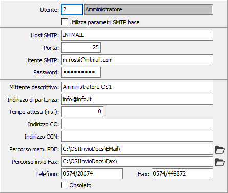

Utenti
La tabella di configurazione utenti consente di impostare per ogni utente di OS1 i dati relativi all'invio di documenti tramite eMail/Fax; nel caso non siano specificati i parametri per utente saranno utilizzati quelli standard.

UTENTE: indica il codice dell'utente di OS1; sul campo sono attive le funzioni di ricerca (F9).
UTILIZZA PARAMETRI SMTP BASE: definisce se utilizzare i parametri di default SMTP inseriti in Configurazione parametri (casella con segno di spunta) oppure indicare dei parametri SMTP specifici per l'utente (casella bianca).
HOST SMTP: Definisce il nome dell'host per l’invio di email tramite SMTP. (Il campo è visibile solo se non è spuntato "Utilizza parametri SMTP base).
PORT: Definisce il numero della porta per l’invio di email tramite SMTP (la porta di default per i server SMTP è la 25). (Il campo è visibile solo se non è spuntato "Utilizza parametri SMTP base).
MITTENTE: Definisce L'utente per l’invio di email tramite SMTP. (Il campo è visibile solo se non è spuntato "Utilizza parametri SMTP base).
PASSWORD: Definisce la password per l’invio di email tramite SMTP. (Il campo è visibile solo se non è spuntato "Utilizza parametri SMTP base).
MITTENTE DESCRITTIVO: Indica il nome del mittente.
INDIRIZZO DI PARTENZA: Definisce l’indirizzo email dal quale vengono inviati i documenti.
TEMPO ATTESA (MS.): Indicare il tempo di attesa (espresso in millisecondi) tra l'invio delle email.
INDIRIZZO CC: Definisce l’indirizzo email al quale vengono inviati i documenti per conoscenza.
INDIRIZZO CCN: Definisce l’indirizzo email al quale vengono inviati i documenti per conoscenza non visibile agli altri indirizzi.
PERCORSO MEMORIZZAZIONE PDF: indicare il percorso di transizione in cui saranno memorizzati i files PDF relativi ai documenti da inviare.
PERCORSO INVIO FAX: indicare il percorso di transizione in cui saranno memorizzati i files relativi ai documenti da inviare per fax.
TELEFONO: indicare il numero di telefono.
FAX: indicare il numero di fax.
OBSOLETO: flag attivabile dall’utente per inibire il possibile utilizzo dell’elemento di tabella in esame nelle successive transazioni.